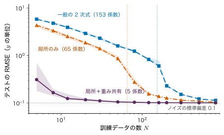
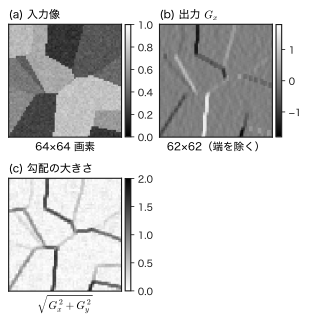
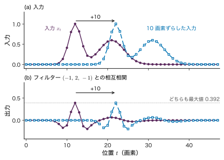
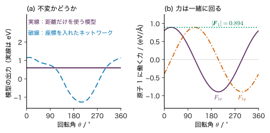

第16章構造を利用する深層学習 — 画像・グラフ・対称性
- 結晶を回転させても，原子の番号を付け替えても，エネルギーは変わらない．この事実をモデルにどう組み込むか．
- 顕微鏡像の粒界は像のどこに写っていても粒界である．画像の「どこにあっても同じ」を，重みの数を増やさずに表すにはどうするか．
- 構造を知っているモデルは，なぜ少ないデータで学べるのか．逆に，何を入れすぎると間違えるのか．
水分子の 3 個の原子の座標を並べて 9 個の数にし，全結合のネットワークに入れることを考えよう．同じ分子でも，原子の番号の付け方は $3!=6$ 通りあり，向きは無数にある．ネットワークから見ると，それらはすべて別々の入力である．エネルギーが向きにも番号にもよらないことを，ネットワークは訓練データから一つずつ覚えるしかない．顕微鏡像でも同じで，64×64 画素の像の左上に写った粒界と右下に写った粒界は，全結合の層にとっては無関係な入力である．
本章では，データが持つ構造（画素が格子に並ぶこと，原子が近くの原子とだけ強く相互作用すること，回転や番号の付け替えで物理量が変わらないこと）をモデルの形に組み込む方法を学ぶ．画像には畳み込み（同じ小さなフィルターを全ての位置で使い回す），分子・結晶にはグラフとメッセージ伝播（message passing．近くの原子から情報を和で集める）を使う．両者に共通する考え方が，対称性に対する不変と同変である．最後に，第24章で学ぶ Attention が「全ての頂点がつながったグラフでのメッセージ伝播」と見られることを予告する．本章は学部生向けの見取り図であり，専門的な事項は「発展」の囲みに分ける．
- 帰納バイアス（モデルの形に組み込んだ仮定）が，必要なデータの数をどう変えるかを，パラメーターの数と学習曲線で説明できる．
- 1 次元・2 次元の畳み込みを手で計算し，重み共有・受容野・プーリング・出力の大きさを説明できる．
- 畳み込みが並進同変であることを証明し，プーリングで不変になる仕組みと，その限界を数値例で示せる．
- 分子・結晶をグラフで表し（周期境界条件を含む），メッセージ伝播の 1 ステップを手で計算できる．
- 不変と同変を定義に従って判定し，エネルギーは不変，力は同変であることを連鎖律で導ける．
- 顕微鏡像・結晶構造・原子配置を入力とする材料の課題で，入力・出力・守るべき対称性・評価の注意を整理できる．
入門ルートで読む節：この章は詳しいルートの章である．入門ルートでは 16.12（まとめ）だけを読み，第22章へ進んでよい（第24章の Attention は本章を読まなくても分かるように書いてある）．
16.1 データの構造と帰納バイアス詳しいルート
16.1.1 全結合層は構造を知らない
第14章の全結合層 $\bm{a}=\bm{W}\bm{x}+\bm{b}$（$\bm{W}\in\R^{D_1\times D}$）では，入力の成分 $x_1,\dots,x_D$ の並び順には意味がない．入力の成分を一斉に並べ替えても，$\bm{W}$ の列を同じように並べ替えれば全く同じネットワークになるからである．つまり全結合層は，「$x_3$ と $x_4$ は隣の画素である」「原子 1 と原子 2 を入れ替えても同じ分子である」といった知識を何も使っていない．
材料のデータには，次のような構造がある（図16.1）．
- 格子の上に並んだデータ：顕微鏡像の画素，スペクトルの波数・角度の点，時系列の時刻．隣どうしの値が強く関係し（局所性），同じ模様はどの位置に現れても同じ意味を持つ（並進）．
- 集合・グラフのデータ：分子や結晶の原子．原子の番号の付け方に意味はなく（並べ替え），近くの原子どうしが強く相互作用する．
- 空間の中の物体：原子の座標．全体を平行移動・回転しても，エネルギーは変わらない（並進・回転）．
このような構造を前提としてモデルの形に組み込んだものを帰納バイアス（inductive bias）という．「帰納」はデータから一般の規則を推し量ること，「バイアス」はそのときに前もって置く仮定の偏りである．第8章で多項式を選んだこと，第12章でカーネルの長さスケールを選んだことも帰納バイアスの一種である．本章の帰納バイアスは「どの重みを共有するか」「どの入力どうしを結ぶか」「どの量だけを使うか」という形をとる．
16.1.2 数値実験：仮定が正しければ少ないデータで学べる
帰納バイアスの効果を，学習が最小二乗法だけで済む小さな実験で確かめる．環状に並んだ $T=16$ 個のサイトの値 $x_1,\dots,x_{16}$（たとえば各サイトの組成のずれを規格化したもの．無次元）から，次の量 $y$ を当てる問題を考える（教育用の合成データ）．
\begin{equation} \begin{aligned} y=\sum_{t=1}^{16}\bigl(&0.5\,x_t^{2}-0.3\,x_tx_{t+1}\\ &+0.1\,x_tx_{t+2}\bigr)+\varepsilon \end{aligned} \label{eq:16-lattice} \end{equation}ここで添字は周期的に数え（$x_{17}=x_1$，$x_{18}=x_2$），$x_t\sim\Normal(0,1)$ は独立，$\varepsilon\sim\Normal(0,0.1^{2})$ は観測ノイズである．式 \eqref{eq:16-lattice} は 1 次元の格子模型のエネルギーの形をしている：各項は隣（$t+1$）と 2 つ隣（$t+2$）までのサイトしか含まず（局所性），係数 $0.5,-0.3,0.1$ はどのサイトでも同じである（並進対称性）．
この $y$ を，係数について線形な 3 つのモデルで当てはめる（どれも第8章の基底関数による線形モデルで，係数は最小二乗法で決める）．
- モデル A（一般の 2 次式）：定数・1 次の項 $x_t$・全ての 2 次の項 $x_sx_t$（$s\le t$）を基底にする．仮定は「2 次式である」ことだけ．
- モデル B（局所のみ）：定数と，各サイト $t$ ごとに $x_t,\ x_t^{2},\ x_tx_{t+1},\ x_tx_{t+2}$ を基底にする．「近くのサイトしか関係しない」と仮定するが，係数はサイトごとに別．
- モデル C（局所＋重み共有）：定数と $\sum_tx_t,\ \sum_tx_t^{2},\ \sum_tx_tx_{t+1},\ \sum_tx_tx_{t+2}$ の 5 個を基底にする．「近く」と「どのサイトでも同じ係数」の両方を仮定する．
3 つのモデルはどれも真の関数 \eqref{eq:16-lattice} を表せる（A ⊃ B ⊃ C で，真の関数は C に入っている）．違うのは係数の数だけである．
例題16.1 3 つのモデルの係数の数
$T=16$ のとき，モデル A・B・C の係数の数を求めよ．
解答 モデル A：定数が 1 個，1 次の項が $T=16$ 個．2 次の項 $x_sx_t$（$s\le t$）は，$s=t$ の $16$ 個と $s\lt t$ の $\binom{16}{2}=120$ 個で $136=16\cdot17/2$ 個．合計 $1+16+136=153$ 個．
モデル B：定数 1 個と，サイトごとに 4 個（$x_t,x_t^{2},x_tx_{t+1},x_tx_{t+2}$）で $1+4\times16=65$ 個．
モデル C：定数と 4 つの和で $5$ 個．$T$ を増やしても 5 個のままである．一方 A は $T^{2}$ に比例して，B は $T$ に比例して増える．

図16.2 の結果ははっきりしている．モデル C は $N=12$ でテストの RMSE が $0.124$ まで下がり，ノイズの標準偏差 $0.1$ に近づく．モデル B が同じ水準（$0.155$）に届くのは $N=120$，モデル A がそれより良い水準（$0.151$）に届くのは $N=300$ である（いずれも中央値）．$y$ の標準偏差は約 $3.1$ なので，データが少ないときのモデル A の誤差（$N=12$ で $3.9$）は，平均値を答えるのと大差ない．
なぜ仮定を入れると少ないデータで済むのか
最小二乗法で $M$ 個の係数を決めるには，少なくとも $M$ 個の独立な方程式（データ）が要る（第8章 8.2 節）．重み共有は，「サイト 1 の係数とサイト 2 の係数は等しい」という等式の制約を前もって課すことにあたる．制約を 1 本課すごとに決めるべき未知数が 1 個減る．しかも 1 個のデータ $(x_1,\dots,x_{16},y)$ の中には 16 個のサイトの例が含まれるので，共有した係数は 1 個のデータから 16 回分の情報を受け取る．ただし，この利点は仮定が正しいときに限る．真の関数がサイトごとに違う係数を持つなら，モデル C はいくらデータを増やしても誤差が減らない（16.11 節）．
16.2 畳み込み — 小さなフィルターを使い回す詳しいルート
16.2.1 1 次元の畳み込み
1 次元の信号 $\bm{x}=(x_1,\dots,x_T)^{\tp}\in\R^{T}$（スペクトル，1 列の画素など）に，幅 $k=2r+1$ のフィルター（カーネルとも呼ぶが，第10章のカーネル関数とは別物）$\bm{w}=(w_{-r},\dots,w_{r})^{\tp}\in\R^{k}$ をかける操作を次で定める．
定義16.1 1 次元の畳み込み層（相互相関の形）
位置 $t$ の出力を
\begin{equation} y_t=\sum_{u=-r}^{r}w_u\,x_{t+u}+b \label{eq:16-conv1d} \end{equation}とする．$b\in\R$ はバイアスで，全ての位置で共通である．端の外側の $x$ は，0 で埋める（ゼロパディング），端の外を使わない位置だけを出力する（valid），周期的に回す（周期境界）のいずれかで扱う．
記号：「畳み込み」と相互相関
数学の畳み込みは $\sum_uw_u\,x_{t-u}$（フィルターを裏返して掛ける）である．深層学習のライブラリーは慣例として裏返さない式 \eqref{eq:16-conv1d}（相互相関）を「畳み込み」と呼ぶ．フィルターは学習で決まるので，裏返したものを学習すれば同じことになり，どちらで書いても表せる関数は変わらない．本章も式 \eqref{eq:16-conv1d} を畳み込みと呼ぶ．数学の本の畳み込みの式と見比べるときは，向きが逆であることに注意する．
式 \eqref{eq:16-conv1d} は第14章の全結合層 $\bm{a}=\bm{W}\bm{x}+\bm{b}$ の特別な場合である．周期境界で $T=5$，$k=3$ のとき，$\bm{y}=\bm{W}\bm{x}+b\bm{1}$ の行列 $\bm{W}\in\R^{5\times5}$ は
$$ \bm{W}=\begin{pmatrix} w_0&w_1&0&0&w_{-1}\\ w_{-1}&w_0&w_1&0&0\\ 0&w_{-1}&w_0&w_1&0\\ 0&0&w_{-1}&w_0&w_1\\ w_1&0&0&w_{-1}&w_0 \end{pmatrix} $$である．全結合なら $25$ 個ある成分のうち，0 でないのは対角線の近くだけ（局所結合），しかも 0 でない成分は 3 種類の値の繰り返し（重み共有）である．各行は 1 つ上の行を右に 1 つ回したもので，このような行列を巡回行列という（図16.3）．
16.2.2 2 次元の畳み込みとチャネル
画像 $\bm{X}\in\R^{H\times W}$（縦 $H$ 画素，横 $W$ 画素．$X_{ij}$ は $i$ 行 $j$ 列の明るさ）には，$k\times k$ のフィルター $\bm{K}\in\R^{k\times k}$（$k=2r+1$．添字は $-r,\dots,r$）をかける．
\begin{equation} Y_{ij}=\sum_{u=-r}^{r}\sum_{v=-r}^{r}K_{uv}\,X_{i+u,\,j+v}+b \label{eq:16-conv2d} \end{equation}カラー画像や，前の層の出力のように 1 画素に複数の値がある場合は，その値の種類をチャネルと呼ぶ．入力が $C_{\mathrm{in}}$ チャネル $\bm{X}^{(1)},\dots,\bm{X}^{(C_{\mathrm{in}})}$，出力が $C_{\mathrm{out}}$ チャネルなら，出力チャネル $c'$ ごとに $C_{\mathrm{in}}$ 枚のフィルターを持ち，全ての入力チャネルについて足す．
\begin{equation} \begin{aligned} Y^{(c')}_{ij}=\sum_{c=1}^{C_{\mathrm{in}}}&\sum_{u=-r}^{r}\sum_{v=-r}^{r}K^{(c',c)}_{uv}\\ &\times X^{(c)}_{i+u,\,j+v}+b^{(c')} \end{aligned} \label{eq:16-conv-multi} \end{equation}畳み込み層のパラメーターの数 $N_{\mathrm{param}}$ は，出力チャネル 1 つあたり重み $k^{2}C_{\mathrm{in}}$ 個とバイアス 1 個なので，
\begin{equation} N_{\mathrm{param}}=C_{\mathrm{out}}\bigl(k^{2}C_{\mathrm{in}}+1\bigr) \label{eq:16-conv-params} \end{equation}である．画像の大きさ $H\times W$ が含まれないことが重要である．全結合層のパラメーター数 $D_l(D_{l-1}+1)$（第14章 14.8 節）が入力の大きさに比例するのと対照的である．
畳み込みの後には，ふつう要素ごとの活性化関数（ReLU など）をかける．畳み込み層を重ねたネットワークを畳み込みニューラルネットワーク（convolutional neural network，CNN）という．手書き数字の認識で CNN を逆伝播で学習させた LeCun ら (1998) の研究が，この形の出発点としてよく引かれる．
例題16.2 粒界を 3×3 のフィルターで検出する
結晶粒の境界（粒界）を含む 5×5 画素の像（明るさは任意単位）
$$ \bm{X}=\begin{pmatrix}2&2&2&8&8\\2&2&8&8&8\\2&2&8&8&8\\2&8&8&8&8\\2&8&8&8&8\end{pmatrix} $$ $$ \bm{K}_x=\begin{pmatrix}-1&0&1\\-1&0&1\\-1&0&1\end{pmatrix} $$に，フィルター $\bm{K}_x$ を端の外を使わない形（valid）でかける．(1) 出力 $\bm{Y}$ の大きさを答え，左上の成分 $Y_{11}$ を計算せよ．(2) 出力全体を求め，大きな値の位置と粒界の関係を述べよ．(3) 縦方向の変化を見る $\bm{K}_y=\bm{K}_x^{\tp}$ をかけた出力も求めよ．(4) 64×64 画素の像を 64×64 個の隠れユニットへ全結合でつなぐ層と，3×3 で $C_{\mathrm{in}}=1$，$C_{\mathrm{out}}=16$ の畳み込み層のパラメーター数を比べよ．
解答 (1) 3×3 の窓が 5×5 の中に収まる位置は縦横 $5-3+1=3$ 通りずつなので，$\bm{Y}$ は 3×3．$Y_{11}$ は $\bm{X}$ の左上 3×3 の窓 $\begin{pmatrix}2&2&2\\2&2&8\\2&2&8\end{pmatrix}$ と $\bm{K}_x$ の成分ごとの積の和で，$\bm{K}_x$ は右の列から左の列を引く形なので
$$ \begin{aligned} Y_{11}&=(2-2)+(8-2)+(8-2)\\ &=0+6+6=12 . \end{aligned} $$(2) 同様に全ての窓で「右の列の和 − 左の列の和」を計算すると
$$ \bm{K}_x\text{ の出力}=\begin{pmatrix}12&18&6\\18&12&0\\18&6&0\end{pmatrix} $$となる．たとえば $Y_{12}$（窓は 1〜3 行・2〜4 列）は右の列 $(8,8,8)$ の和 24 から左の列 $(2,2,2)$ の和 6 を引いて 18．明るさが一様な右下の窓では 0 になり，左から右へ明るくなる境界（粒界）を含む窓で大きな正の値になる．
(3) $\bm{K}_y$ は「下の行の和 − 上の行の和」なので，$\begin{pmatrix}6&6&6\\6&6&0\\6&6&0\end{pmatrix}$．この粒界は右上から左下へ斜めに走るので，横方向の変化（$\bm{K}_x$）のほうが大きく出る．
(4) 全結合：$4096\times4096$ の重みと $4096$ 個のバイアスで $16\,781\,312$ 個．畳み込み：式 \eqref{eq:16-conv-params} で $16\times(9\times1+1)=160$ 個．約 10 万分の 1 である．
例題16.2 のフィルターを 64×64 画素の合成の組織像にかけたのが図16.4である．$\bm{K}_x$ と $\bm{K}_y$ の出力 $G_x,G_y$ から $\sqrt{G_x^{2}+G_y^{2}}$ を作ると，向きによらずに粒界が浮かび上がる．CNN では，このようなフィルターの値を人が決めず，誤差逆伝播で学習する．

16.2.3 ストライド，パディング，受容野，プーリング
ストライド $s$ はフィルターを何画素ずつずらすか，パディング $P$ は端の外側に 0 を何画素足すかである．長さ $T$ の入力に幅 $k$ のフィルターをかけると，出力の長さは
\begin{equation} T_{\mathrm{out}}=\left\lfloor\frac{T+2P-k}{s}\right\rfloor+1 \label{eq:16-outsize} \end{equation}になる（$\lfloor\cdot\rfloor$ は切り捨て）．端に 0 を足した長さ $T+2P$ の中で，幅 $k$ の窓の左端が取りうる位置は $0,\,s,\,2s,\dots$ で，最後の位置が $T+2P-k$ を超えないからである．$k=3$，$P=1$，$s=1$ なら $T_{\mathrm{out}}=T$ で大きさが変わらない（same と呼ぶ）．
プーリングは，小さな窓の中の値を 1 つにまとめる操作で，窓の中の最大値をとる max pooling，平均をとる average pooling がある．2×2 の窓をストライド 2 でかけると縦横が半分になる．パラメーターは持たない．特徴マップの全体で 1 つの値にまとめるもの（global average pooling など）は，像の大きさによらない長さの出力を作るので，分類の最後の段に使われる．
出力の 1 つの値が，入力のどの範囲の画素から影響を受けるかを受容野（receptive field）という．第 $l$ 層の受容野の幅を $r_l$，その層の出力で隣り合う 2 点が入力で何画素離れているか（累積のストライド）を $j_l$ とすると，入力そのものは $r_0=1$，$j_0=1$ で，幅 $k_l$，ストライド $s_l$ の層を重ねるごとに
\begin{equation} r_l=r_{l-1}+(k_l-1)\,j_{l-1} \label{eq:16-rf} \end{equation}となり，累積のストライドは $j_l=j_{l-1}\,s_l$ となる．第 $l$ 層の窓は第 $l-1$ 層の $k_l$ 個の点にまたがり，その両端の点は入力では $(k_l-1)j_{l-1}$ 画素離れているので，受容野はその分だけ広がる．3×3 の畳み込みを $n_{\mathrm{layer}}$ 層重ねるだけなら受容野は $2n_{\mathrm{layer}}+1$ 画素で，ゆっくりとしか広がらない．プーリングでストライドを入れると $j$ が倍々になり，その後の層で受容野が速く広がる．
重み共有と逆伝播
同じ重み $w_u$ が全ての位置 $t$ の出力 $y_t$ に使われるので，損失 $L$ の $w_u$ についての勾配は，第15章の定理15.1（経路の和）により，使われた場所ごとの寄与の和になる．$\delta_t\equiv\partial L/\partial y_t$ とおくと，式 \eqref{eq:16-conv1d} から $\partial y_t/\partial w_u=x_{t+u}$ なので
\begin{equation} \pdiff{L}{w_u}=\sum_{t}\delta_t\,x_{t+u} \label{eq:16-shared-grad} \end{equation}である（バイアスについては $\partial L/\partial b=\sum_t\delta_t$）．この和自体が，誤差 $\delta_t$ と入力の相互相関になっている．16.1 節の「共有した係数は 1 個のデータから何回分もの情報を受け取る」は，この和のことである．
16.3 並進同変性 — ずらすと出力もずれる詳しいルート
周期境界の長さ $T$ の信号について，全体を $\tau$ だけずらす操作 $S_\tau$ を
\begin{equation} (S_\tau\bm{x})_t=x_{t-\tau} \label{eq:16-shift} \end{equation}で定める（添字は $T$ を法として数える）．$S_\tau\bm{x}$ は $\bm{x}$ を右へ $\tau$ だけ動かした信号である（$\bm{x}$ の位置 $t$ の値が位置 $t+\tau$ に来る）．
定理16.1 畳み込みは並進同変
周期境界の畳み込み層 \eqref{eq:16-conv1d} を $f(\bm{x})=\bm{y}$ と書くと，全ての $\tau$ と全ての $\bm{x}$ について
$$ f(S_\tau\bm{x})=S_\tau f(\bm{x}) $$が成り立つ．すなわち，入力をずらしてから畳み込んでも，畳み込んでからずらしても同じである．
証明
左辺の位置 $t$ の成分を，定義に従って書き下す．$\bm{x}'=S_\tau\bm{x}$ とおくと $x'_{s}=x_{s-\tau}$ である．
$$ \begin{aligned} \bigl(f(S_\tau\bm{x})\bigr)_t&=\sum_{u=-r}^{r}w_u\,x'_{t+u}+b\\ &=\sum_{u=-r}^{r}w_u\,x_{(t-\tau)+u}+b . \end{aligned} $$右辺の位置 $t$ の成分は，式 \eqref{eq:16-shift} で $\bm{y}=f(\bm{x})$ をずらしたものなので
$$ \begin{aligned} \bigl(S_\tau f(\bm{x})\bigr)_t&=y_{t-\tau}\\ &=\sum_{u=-r}^{r}w_u\,x_{(t-\tau)+u}+b . \end{aligned} $$両者は全ての $t$ で一致する．使ったのは「重み $w_u$ とバイアス $b$ が位置 $t$ によらない」ことだけである．位置ごとに別の重み $w_u^{(t)}$ を使うモデル（16.1 節のモデル B）では，1 行目の $w_u$ が $w_u^{(t)}$，2 行目が $w_u^{(t-\tau)}$ になって一致しない．
（証明終わり）
要素ごとの活性化関数 $h$ も同変である（$h$ を各成分にかけてからずらしても，ずらしてからかけても同じ）．同変な写像を合成したものも同変なので（$f_2(f_1(S_\tau\bm{x}))=f_2(S_\tau f_1(\bm{x}))=S_\tau f_2(f_1(\bm{x}))$），畳み込み層と活性化関数を何層重ねても，ネットワーク全体は並進同変である．
一方，分類のように「どこに写っているか」は問わず「何が写っているか」だけを答えたいときは，出力がずらし方によらないこと，すなわち並進不変 $g(S_\tau\bm{x})=g(\bm{x})$ が欲しい．同変な特徴の最後に，全体の最大値や全体の和（平均）をとると不変になる．全体の和 $\sum_ty_t$ は，並べ方を変えても値が変わらないからである．

例題16.3 ずらすと何が変わり，何が変わらないか
長さ $T=8$ の周期的な信号 $\bm{x}=(0,0,1,3,1,0,0,0)$ に，フィルター $(w_{-1},w_0,w_1)=(-1,2,-1)$，$b=0$ をかける．(1) 出力 $\bm{y}$ を求めよ．(2) $\bm{x}$ を右に 2 ずらした $S_2\bm{x}$ の出力を求め，$S_2\bm{y}$ と比べよ．(3) 全体の最大値は変わるか．(4) $\bm{y}$ に幅 2・ストライド 2 の max pooling をかけた結果を，ずらし幅 0，1，2 で比べよ．
解答 (1) $y_t=-x_{t-1}+2x_t-x_{t+1}$ で，周期境界なので $x_0=x_8=0$，$x_9=x_1=0$ とする．
$$ \begin{aligned} y_1&=-x_8+2x_1-x_2=0,\\ y_2&=-x_1+2x_2-x_3=-1,\\ y_3&=-x_2+2x_3-x_4=-1,\\ y_4&=-x_3+2x_4-x_5=4,\\ y_5&=-x_4+2x_5-x_6=-1,\\ y_6&=-x_5+2x_6-x_7=-1,\\ y_7&=y_8=0 . \end{aligned} $$よって $\bm{y}=(0,-1,-1,4,-1,-1,0,0)$．
(2) $S_2\bm{x}=(0,0,0,0,1,3,1,0)$．同じ計算で出力は $(0,0,0,-1,-1,4,-1,-1)$ となり，$S_2\bm{y}$（$\bm{y}$ を右へ 2 ずらしたもの）と一致する（定理16.1）．
(3) どちらも最大値は 4 で変わらない（全体の最大値は不変）．
(4) $\bm{y}$ の 2 個ずつの組 $(y_1,y_2),(y_3,y_4),\dots$ の最大値をとると $(0,4,-1,0)$．1 ずらした入力の出力 $S_1\bm{y}=(0,0,-1,-1,4,-1,-1,0)$ では $(0,-1,4,0)$，2 ずらすと $(0,0,4,-1)$．2 ずらしたときはプーリングの出力も 1 つずれる（ストライドの倍数のずらしでは同変）が，1 ずらしたときは単なるずれでは表せない．ストライド付きのプーリングは，ストライドより細かいずらしに対して厳密な同変性を壊す．
注意：「並進同変」は端とストライドで崩れる
定理16.1 は周期境界を仮定した．ゼロパディングや valid の畳み込みでは，像の端の近くで成り立たない（ずらすと像の外へ出る部分と，0 で埋められた部分が入れ替わる）．また例題16.3 (4) のように，ストライドが 2 以上の層は，ストライドの倍数でないずらしに対して同変でない．実際の CNN の「ずらしても同じ答え」は近似的なものであり，その近似を補うためにずらした像を訓練データに加えること（データ拡張）がよく行われる．
16.4 CNN と微細組織 — 顕微鏡像の分類と領域分割詳しいルート
16.4.1 課題の型
材料の微細組織（結晶粒，析出物，気孔，相の分布）は，光学顕微鏡や走査電子顕微鏡（SEM）の像として記録される．微細組織は強度・靱性・電気的性質を左右するので，像から組織を定量する作業は材料研究の基本である．CNN を使う課題は，出力の形で大きく 2 つに分かれる．
- 分類：1 枚の像に 1 つのラベル（「フェライト＋パーライト」「マルテンサイト」など）を付ける．入力 $\bm{X}\in\R^{H\times W}$（白黒なら 1 チャネル），出力は $K$ クラスの確率 $\hat{\bm{y}}\in\R^{K}$（第14章 14.6 節の softmax）．畳み込みとプーリングで像を縮めながら特徴を作り，最後に全体の平均をとって（並進不変）全結合層で分類する．
- 領域分割（セグメンテーション）：画素ごとにラベル（粒内・粒界・気孔など）を付ける．出力は入力と同じ大きさの $H\times W\times K$ で，並進同変であるべき課題である．像をいったん縮めて広い範囲の文脈をとり，再び元の大きさに戻す encoder–decoder 型（U-Net，Ronneberger ら 2015）がよく使われる．分割の結果から粒径分布・相分率・気孔率を数える．
どちらの場合も，学習に使うラベル（どの画素が粒界か）は人が付けたものであり，ラベルを付ける人の基準のばらつきがそのまま「正解」のばらつきになる．
16.4.2 倍率と撮影条件 — 分布の変化
CNN のフィルターは画素の単位で模様を学ぶ．同じ組織でも，倍率が 4 倍違えば粒は 4 倍の画素数で写り，学んだフィルターの大きさと合わなくなる．加速電圧・検出器（二次電子か反射電子か）・エッチングの条件・明るさとコントラストが違えば，同じ組織が違う像になる．これらは訓練データとテストデータの分布が違う状況（分布の変化．第6章 6.9 節）であり，並進同変性は何も助けてくれない（並進は「同じ倍率で位置だけが違う」ことしか扱わない）．対策は，画素の大きさ（μm/画素）をそろえてから学習・予測する，倍率や明るさを変えた像を訓練データに加える（データ拡張），撮影条件を記録して評価を条件ごとに分ける，などである．
例題16.4 受容野は何 μm か
3×3 の畳み込み（ストライド 1）を「畳み込み → 畳み込み → 2×2 の max pooling（ストライド 2）」の順に 2 回繰り返し，最後に 3×3 の畳み込みを 2 層重ねたネットワークがある（畳み込み 6 層，プーリング 2 層）．(1) 最後の層の受容野の幅を式 \eqref{eq:16-rf} で求めよ．(2) 画素の大きさが 0.25 μm と 1.0 μm の像で，受容野は何 μm か．(3) 平均粒径 10 μm の組織を見るとき，2 つの倍率で 1 つの出力が「見ている」範囲を比べよ．
解答 (1) $r_0=1$，$j_0=1$ から順に計算する．
| 層 | $k_l$ | $s_l$ | $r_l=r_{l-1}+(k_l-1)j_{l-1}$ | $j_l$ |
|---|---|---|---|---|
| 畳み込み 1 | 3 | 1 | $1+2\times1=3$ | 1 |
| 畳み込み 2 | 3 | 1 | $3+2\times1=5$ | 1 |
| プーリング 1 | 2 | 2 | $5+1\times1=6$ | 2 |
| 畳み込み 3 | 3 | 1 | $6+2\times2=10$ | 2 |
| 畳み込み 4 | 3 | 1 | $10+2\times2=14$ | 2 |
| プーリング 2 | 2 | 2 | $14+1\times2=16$ | 4 |
| 畳み込み 5 | 3 | 1 | $16+2\times4=24$ | 4 |
| 畳み込み 6 | 3 | 1 | $24+2\times4=32$ | 4 |
受容野は 32 画素である．(2) $32\times0.25=8$ μm と $32\times1.0=32$ μm．(3) 粒径 10 μm は，0.25 μm/画素では 40 画素，1.0 μm/画素では 10 画素である．前者では受容野（8 μm）が粒 1 個より狭く，出力は「粒の内部か粒界の一部」しか見ていない．後者では受容野（32 μm）に粒が約 3 個並ぶ．同じ重みのネットワークでも，倍率が変わると見ている物理的な範囲が 4 倍変わり，学んだ特徴の意味が変わる．
16.4.3 同じ試料の視野を訓練とテストに分けない
1 つの試料から何十枚もの視野を撮るのは普通のことである．同じ試料の視野どうしは，組成・熱処理・研磨・撮影条件を共有するので，互いによく似ている．画像を 1 枚ずつ無作為に訓練とテストに分けると，テストの像のほとんどについて「同じ試料の兄弟の像」が訓練データに入る．これはデータ漏洩（第6章 6.7 節）であり，テストの成績は「同じ試料の別の視野を当てる力」を測るだけで，「新しい試料を当てる力」を測らない．分割は試料（あるいは熱処理のバッチ）の単位で行う（図16.6，第6章 6.8 節）．
どれだけ兄弟が入るかを数えてみる．5 個の試料から 20 視野ずつ，計 100 枚を撮り，無作為に 80 枚を訓練，20 枚をテストにする．テストの 1 枚を固定すると，同じ試料の残り 19 枚は，残りの 99 枚の中で訓練の 80 枠に入る確率がそれぞれ $80/99$ なので，訓練に入る兄弟の数の期待値は $19\times80/99\approx15.4$ 枚である．兄弟が 1 枚も訓練に入らないのは，19 枚がすべて残りのテストの 19 枠に入る場合だけで，その確率は $1/\binom{99}{19}\approx9\times10^{-21}$ である．
16.5 グラフとしての分子・結晶詳しいルート
16.5.1 頂点と辺
原子の集まりは画素のように格子の上には並ばない．そこでグラフで表す．グラフ $G=(\mathcal{V},\mathcal{E})$ は，頂点の集合 $\mathcal{V}=\{1,\dots,N_{\mathrm{at}}\}$ と，頂点の組を結ぶ辺の集合 $\mathcal{E}$ からなる．原子の系では次のように決める（図16.7）．
- 頂点＝原子．頂点 $i$ には特徴ベクトル $\bm{h}_i\in\R^{d}$（元素の種類を表す one-hot ベクトルや，電気陰性度・原子半径などの値を並べたもの）を持たせる．
- 辺＝近くにある原子の組．原子 $i,j$ の位置を $\bm{r}_i,\bm{r}_j\in\R^{3}$（単位 Å）とし，距離 $r_{ij}=\norm{\bm{r}_i-\bm{r}_j}$ が切断半径 $r_{\mathrm c}$ より小さければ辺を張る．辺には特徴 $\bm{e}_{ij}$（距離 $r_{ij}$ そのもの，あるいは 16.8 節の動径基底で展開したベクトル）を持たせる．
- 近傍：頂点 $i$ と辺で結ばれた頂点の集合を $\mathcal{A}(i)$ と書く（adjacent の頭文字．グラフの文献では $\Normal(i)$ と書くことが多いが，本書では Gauss 分布の記号 $\Normal$ と区別する）．
原子の番号の付け方は任意なので，グラフを使う計算は番号の付け方によらない形で作る（16.6 節）．
16.5.2 周期境界条件 — 結晶のグラフ
結晶は単位胞の繰り返しである．格子ベクトル $\bm{a}_1,\bm{a}_2,\bm{a}_3\in\R^{3}$ を列に並べた行列を $\bm{A}=(\bm{a}_1\ \bm{a}_2\ \bm{a}_3)\in\R^{3\times3}$ とすると，単位胞の中の原子 $j$ の周期像は $\bm{r}_j+\bm{A}\bm{n}$（$\bm{n}\in\mathbb{Z}^{3}$ は整数の 3 つ組）の位置にある．原子 $i$ から原子 $j$ の周期像 $\bm{n}$ までの距離
\begin{equation} r_{ij}^{(\bm{n})}=\norm{\bm{r}_j+\bm{A}\bm{n}-\bm{r}_i} \label{eq:16-pbc} \end{equation}が $r_{\mathrm c}$ より小さい組 $(i,j,\bm{n})$ ごとに辺を張る．頂点は単位胞の中の原子だけ（$N_{\mathrm{at}}$ 個）なので，同じ組 $i,j$ の間に，周期像ごとに何本もの辺が張られうる．単位胞に原子が 1 個しかなければ，すべての辺は自分自身の周期像へ向かう（自己ループ）．このように同じ頂点の組を結ぶ辺が複数ありうるグラフを多重グラフという．結晶を「単位胞の中の原子の組に辺が 1 本」のふつうのグラフで表すと，この情報が失われる．
例題16.5 2 次元の結晶のグラフを作る
一辺 4 Å の正方形の単位胞（$\bm{a}_1=(4,0)$，$\bm{a}_2=(0,4)$ Å）に，原子 A が $(0,0)$，原子 B が $(2,2)$ Å にある 2 次元の結晶を考える．(1) 切断半径 $r_{\mathrm c}=3.0$ Å で，A から出る辺を全て挙げよ（相手の原子と周期像 $\bm{n}$）．(2) $r_{\mathrm c}=4.5$ Å にすると，A から出る辺はいくつになるか．(3) 向きを区別して数えた辺の総数を，2 つの $r_{\mathrm c}$ で求めよ．
解答 (1) A から B の周期像 $(2+4n_1,\ 2+4n_2)$ までの距離は $\sqrt{(2+4n_1)^{2}+(2+4n_2)^{2}}$ である．$n_1,n_2\in\{0,-1\}$ のとき各成分が $\pm2$ になり，距離は $\sqrt{4+4}=2\sqrt{2}\approx2.83$ Å $\lt3.0$ Å．それ以外では少なくとも一方の成分の絶対値が 6 以上になり，距離は $\sqrt{36+4}\approx6.32$ Å 以上．A から A の周期像までの距離は $4\sqrt{n_1^{2}+n_2^{2}}$ で，最短でも 4 Å．したがって辺は A→B の 4 本で，周期像は $\bm{n}=(0,0),(-1,0),(0,-1),(-1,-1)$．
(2) $r_{\mathrm c}=4.5$ Å では，さらに A から A 自身の周期像 $\bm{n}=(\pm1,0),(0,\pm1)$（距離 4 Å）への 4 本の自己ループが加わり，計 8 本．
(3) B から見ても同じ形なので（B から A への 4 本，$r_{\mathrm c}=4.5$ Å では B の自己ループ 4 本も），総数は $r_{\mathrm c}=3.0$ Å で 8 本，$4.5$ Å で 16 本．頂点は 2 個しかないのに辺は 8 本・16 本あり，同じ組（A と B）の間に 4 本ずつの辺がある．
16.6 メッセージ伝播 — 近くの原子から和で集める詳しいルート
16.6.1 1 ステップの式
グラフの上のネットワークの多くは，次の操作を何回か繰り返す．頂点 $i$ の第 $l$ ステップの特徴を $\bm{h}_i^{(l)}\in\R^{d_l}$（$\bm{h}_i^{(0)}$ は 16.5 節の頂点の特徴）とする．
定義16.2 メッセージ伝播（message passing）
各頂点 $i$ について，近傍 $\mathcal{A}(i)$ の各頂点 $j$ からメッセージを作って足し合わせ，それを使って特徴を更新する．
\begin{equation} \begin{aligned} \bm{m}_i^{(l)}&=\sum_{j\in\mathcal{A}(i)}M_l\bigl(\bm{h}_i^{(l)},\\ &\qquad\quad\bm{h}_j^{(l)},\,\bm{e}_{ij}\bigr) \end{aligned} \label{eq:16-mp-msg} \end{equation} \begin{equation} \bm{h}_i^{(l+1)}=U_l\bigl(\bm{h}_i^{(l)},\,\bm{m}_i^{(l)}\bigr) \label{eq:16-mp-upd} \end{equation}$M_l$（メッセージ関数）と $U_l$（更新関数）は小さな全結合のネットワークで，全ての頂点・全ての辺で共通の重みを持つ．この操作を $n_{\mathrm{layer}}$ ステップ（1 ステップが 1 層にあたるので，層の数と同じ記号を使う）繰り返した後，全頂点の特徴をまとめてグラフ全体の出力にする（読み出し）．
\begin{equation} \hat{y}=R\Bigl(\sum_{i=1}^{N_{\mathrm{at}}}g\bigl(\bm{h}_i^{(n_{\mathrm{layer}})}\bigr)\Bigr) \label{eq:16-readout} \end{equation}あるいは和の代わりに平均 $\frac{1}{N_{\mathrm{at}}}\sum_{i}g\bigl(\bm{h}_i^{(n_{\mathrm{layer}})}\bigr)$ をとる．$g$，$R$ も小さなネットワーク（または恒等写像）である．
この枠組みは Gilmer ら (2017) が，それまでの分子のためのいくつかのネットワークをまとめて message passing neural network と名付けたものである．本書の $\bm{h}_i^{(l)}$ は第14章の隠れ層の出力 $\bm{z}^{(l)}$ に当たるが，頂点ごとに 1 本ずつあるので頂点の添字 $i$ を付ける．$\bm{h}$ を使うのは，グラフの文献でこの文字が標準的だからである（第23章の RNN の $\bm{h}_t$ とは別の量）．
この形の要点は次の 3 つである．
- 局所性：1 ステップで情報は辺 1 本分しか伝わらない．$n_{\mathrm{layer}}$ ステップ後の $\bm{h}_i^{(n_{\mathrm{layer}})}$ は，辺を $n_{\mathrm{layer}}$ 本たどって届く範囲（距離にして最大 $n_{\mathrm{layer}}r_{\mathrm c}$）の原子だけに依存する．畳み込みの受容野にあたる．
- 重み共有：$M_l,U_l$ は全ての原子で同じなので，原子数が違う分子・結晶にも同じネットワークが使える．畳み込みが画像の大きさによらないのと同じである．
- 和で集める：式 \eqref{eq:16-mp-msg} の和は，近傍の頂点をどの順に足しても同じ値になる．だから原子の番号を付け替えても，各原子の新しい特徴は同じ値のまま，番号だけが付け替わる（並べ替え同変）．読み出し \eqref{eq:16-readout} の和も平均も順番によらないので，$\hat{y}$ は並べ替え不変になる．
例題16.6 3 原子のメッセージ伝播を手で追う
平面上に原子 1（元素 A）が $(0,0)$，原子 2（元素 B）が $(1.0,0)$，原子 3（元素 B）が $(0,1.5)$ Å にある（教育用の模型）．切断半径は 2.0 Å とし，頂点の特徴は 1 次元で $h^{(0)}=1.0$（A），$0.5$（B）とする．メッセージと更新を
$$ \begin{aligned} M(h_i,h_j,r_{ij})&=h_j\,\phi(r_{ij}),\\ \phi(r)&=\exp\!\left(-\frac{r^{2}}{2\ \text{Å}^{2}}\right),\\ U(h,m)&=\tanh(h+m) \end{aligned} $$とし，読み出しを $E=v\sum_ih_i^{(1)}$（$v=-2.0$ eV）とする．(1) 3 つの距離と $\phi$ の値を求めよ．(2) $m_i^{(0)}$ と $h_i^{(1)}$ を求めよ．(3) $E$ を求めよ．平均で読み出すと何 eV/原子か．(4) 番号を付け替え，元の原子 3，1，2 を新しい番号 1，2，3 と呼ぶと，(2)(3) はどうなるか．
解答 (1) $r_{12}=1.0$ Å，$r_{13}=1.5$ Å，$r_{23}=\sqrt{1.0^{2}+1.5^{2}}=\sqrt{3.25}=1.803$ Å．どれも 2.0 Å より小さいので，3 本とも辺になる．$\phi(1.0)=e^{-0.5}=0.6065$，$\phi(1.5)=e^{-1.125}=0.3247$，$\phi(1.803)=e^{-1.625}=0.1969$．
(2) 原子 1 には原子 2，3（どちらも $h=0.5$）からメッセージが届く．
更新は
$$ \begin{aligned} h_1^{(1)}&=\tanh(1.0+0.4656)=0.8987,\\ h_2^{(1)}&=\tanh(0.5+0.7050)=0.8352,\\ h_3^{(1)}&=\tanh(0.5+0.4231)=0.7274 . \end{aligned} $$同じ元素 B の原子 2 と 3 も，周りの環境が違うので違う特徴になった．
(3) 和をとって
平均なら $-2.0\times2.4613/3=-1.641$ eV/原子．
(4) 新しい番号では特徴の並びが $(0.5,1.0,0.5)$，距離の表も行と列が同じように並べ替わるだけなので，各原子のメッセージと新しい特徴は元の値の並べ替え $(0.7274,0.8987,0.8352)$ になる（並べ替え同変）．和は同じ $2.4613$ なので $E=-4.923$ eV のまま（並べ替え不変）．
16.6.2 和・平均・最大値の違い
集め方（式 \eqref{eq:16-mp-msg}）と読み出し（式 \eqref{eq:16-readout}）には，順番によらない演算なら何を使ってもよい．代表的なのは和・平均・最大値で，何を表したいかで選ぶ．
- 和は原子数に比例して大きくなるので，示量的な量（全エネルギー）の読み出しに合う．第14章 14.9 節の「全エネルギーを原子ごとのエネルギーの和で表す」は，$g$ を原子ごとのエネルギーとした和の読み出しそのものである．
- 平均は原子数によらないので，示強的な量（1 原子あたりの形成エネルギー，バンドギャップ）に合う．単位胞を 2×2×2 倍した超格子を入れても同じ値を返す（例題16.10）．
- 最大値は「1 か所でもあれば」という性質（欠陥の有無など）に向くが，勾配が最大の頂点にしか流れない．
発展：並べ替え不変な関数の一般形
集合を入力とする関数 $f(\{\bm{x}_1,\dots,\bm{x}_N\})$ が並べ替え不変なら，適当な関数 $\phi,\rho$ を使って $f=\rho\bigl(\sum_i\phi(\bm{x}_i)\bigr)$ と書ける，という結果が知られている（Zaheer ら 2017 の Deep Sets．要素が可算集合から取られる場合などの条件付き）．読み出し \eqref{eq:16-readout} はちょうどこの形をしている．つまり「各要素を同じ関数で変換して足し，その後で変換する」という形は，並べ替え不変な関数を作るための特別な工夫ではなく，ほぼ一般的な形である．
16.7 対称性 — 不変と同変詳しいルート
16.7.1 定義
$N_{\mathrm{at}}$ 個の原子の位置をまとめて $\bm{\mathcal{R}}=(\bm{r}_1,\dots,\bm{r}_{N_{\mathrm{at}}})$ と書く．原子の系に施して「物理的には同じ系」に移す操作は次の 3 種類である．
- 並進：$\bm{r}_i\mapsto\bm{r}_i+\bm{t}$（$\bm{t}\in\R^{3}$．全原子で同じ）．
- 回転：$\bm{r}_i\mapsto\bm{Q}\bm{r}_i$．$\bm{Q}\in\R^{3\times3}$ は回転行列（$\bm{Q}^{\tp}\bm{Q}=\bm{I}$，$\det\bm{Q}=1$．大学数学 第16章 16.4）．
- 並べ替え：同じ元素の原子の番号を $\pi$ で付け替える：$\bm{r}_i\mapsto\bm{r}_{\pi(i)}$．
これらの操作をまとめて $g$ と書き，$\bm{\mathcal{R}}$ に施した結果を $g\cdot\bm{\mathcal{R}}$ と書く．
定義16.3 不変と同変
関数 $f$ が操作 $g$ に対して不変（invariant）であるとは，
\begin{equation} f(g\cdot\bm{\mathcal{R}})=f(\bm{\mathcal{R}}) \label{eq:16-inv} \end{equation}が全ての $\bm{\mathcal{R}}$ について成り立つことをいう．出力にも同じ操作の「出力の側の表し方」$g\cdot$ が定まっていて，
\begin{equation} f(g\cdot\bm{\mathcal{R}})=g\cdot f(\bm{\mathcal{R}}) \label{eq:16-equiv} \end{equation}が全ての $\bm{\mathcal{R}}$ について成り立つとき，$f$ は $g$ に対して同変（equivariant）であるという．
不変は，出力の側の $g\cdot$ が「何もしない」場合の同変である．畳み込みの並進同変性（定理16.1）は，入力にも出力にもずらし $S_\tau$ が作用する場合である．
16.7.2 エネルギーは不変，力は同変
孤立した分子のエネルギー $E(\bm{\mathcal{R}})$ は，並進・回転・同じ元素の並べ替えのどれに対しても不変である．原子 $i$ に働く力 $\bm{F}_i=-\partial E/\partial\bm{r}_i\in\R^{3}$（単位 eV/Å）は，系を回すと一緒に回る．力が同変であることは，エネルギーが不変であることから導ける．
定理16.2 不変なエネルギーから同変な力が出る
全原子に同じ回転 $\bm{Q}$ と並進 $\bm{t}$ を施した配置を $\bm{Q}\bm{\mathcal{R}}+\bm{t}$ と書く．$E$ が回転と並進に対して不変，すなわち全ての $\bm{Q}$，$\bm{t}$ について $E(\bm{Q}\bm{\mathcal{R}}+\bm{t})=E(\bm{\mathcal{R}})$ なら，
$$ \begin{aligned} &\bm{F}_i(\bm{Q}\bm{\mathcal{R}}+\bm{t})=\bm{Q}\,\bm{F}_i(\bm{\mathcal{R}}),\\ &\sum_{i=1}^{N_{\mathrm{at}}}\bm{F}_i(\bm{\mathcal{R}})=\bm{0} \end{aligned} $$が成り立つ．
証明
回転後の位置を $\bm{r}'_k=\bm{Q}\bm{r}_k+\bm{t}$ とおき，不変性の式 $E(\bm{r}'_1,\dots)=E(\bm{r}_1,\dots)$ の両辺を，原子 $i$ の位置の第 $a$ 成分 $r_{i,a}$（$a=1,2,3$）で偏微分する．右辺は $\partial E/\partial r_{i,a}=-F_{i,a}(\bm{\mathcal{R}})$．左辺は連鎖律（大学数学 第6章 6.4）で，$r_{i,a}$ に依存するのは $\bm{r}'_i$ の成分 $r'_{i,b}=\sum_{c}Q_{bc}r_{i,c}+t_b$ だけであり，$\partial r'_{i,b}/\partial r_{i,a}=Q_{ba}$ なので
$$ \begin{aligned} \pdiff{}{r_{i,a}}E(\bm{r}'_1,\dots)&=\sum_{b=1}^{3}\pdiff{E}{r'_{i,b}}\bigg|_{\bm{\mathcal{R}}'}\pdiff{r'_{i,b}}{r_{i,a}}\\ &=-\sum_{b=1}^{3}F_{i,b}(\bm{\mathcal{R}}')\,Q_{ba} . \end{aligned} $$両辺を等しいとおくと $\sum_bQ_{ba}F_{i,b}(\bm{\mathcal{R}}')=F_{i,a}(\bm{\mathcal{R}})$，ベクトルで書けば $\bm{Q}^{\tp}\bm{F}_i(\bm{\mathcal{R}}')=\bm{F}_i(\bm{\mathcal{R}})$．左から $\bm{Q}$ を掛け，$\bm{Q}\bm{Q}^{\tp}=\bm{I}$ を使うと $\bm{F}_i(\bm{\mathcal{R}}')=\bm{Q}\bm{F}_i(\bm{\mathcal{R}})$ を得る．
次に $\bm{Q}=\bm{I}$（並進だけ）とし，$\bm{t}=\epsilon\bm{e}_a$（$\bm{e}_a$ は第 $a$ 軸の単位ベクトル）とおく．$E(\bm{r}_1+\epsilon\bm{e}_a,\dots)=E(\bm{r}_1,\dots)$ が全ての $\epsilon$ で成り立つので，$\epsilon$ で微分して $\epsilon=0$ とおくと，全原子の位置が同時に動くことから連鎖律で $\sum_i\partial E/\partial r_{i,a}=0$，すなわち $\sum_iF_{i,a}=0$．
（証明終わり）
この定理の実用上の意味は大きい．エネルギーを不変なモデルで表し，力をその微分として求めれば，力は自動的に同変で，和は自動的に 0 になる（運動量が保存される）．第15章 15.10 節で述べたように，この微分は誤差逆伝播と同じ仕組み（逆モードの自動微分）で求まる．
16.7.3 距離だけを使えば不変になる
2 原子の距離 $r_{ij}=\norm{\bm{r}_i-\bm{r}_j}$ は並進と回転に対して不変である：
$$ \begin{aligned} &\norm{(\bm{Q}\bm{r}_i+\bm{t})-(\bm{Q}\bm{r}_j+\bm{t})}\\ &\quad=\norm{\bm{Q}(\bm{r}_i-\bm{r}_j)}\\ &\quad=\sqrt{(\bm{r}_i-\bm{r}_j)^{\tp}\bm{Q}^{\tp}\bm{Q}(\bm{r}_i-\bm{r}_j)}\\ &\quad=r_{ij} . \end{aligned} $$したがって，16.6 節のメッセージ伝播で辺の特徴 $\bm{e}_{ij}$ に距離（とその関数）だけを使い，頂点の特徴に元素の情報だけを使えば，全ての $\bm{h}_i^{(l)}$ は並進・回転に対して不変になり，和の読み出しで並べ替えに対しても不変になる．最も簡単な例は，原子の対ごとのポテンシャル $V(r)$ の和
\begin{equation} E=\sum_{i\lt j}V(r_{ij}) \label{eq:16-pair} \end{equation}で，原子 $i$ に働く力は
\begin{equation} \bm{F}_i=\sum_{j\ne i}V'(r_{ij})\,\frac{\bm{r}_j-\bm{r}_i}{r_{ij}} \label{eq:16-pairforce} \end{equation}である．この式は，$\partial r_{ij}/\partial\bm{r}_i=(\bm{r}_i-\bm{r}_j)/r_{ij}$ と $\bm{F}_i=-\partial E/\partial\bm{r}_i$ から出る．$V'(r_{ij})\gt0$（ばねが伸びている）なら原子 $i$ は $j$ の方へ引かれる．

例題16.7 回してもエネルギーは同じ，力は一緒に回る
平面上の 3 原子が $\bm{r}_1=(0,0)$，$\bm{r}_2=(1.2,0)$，$\bm{r}_3=(0,0.9)$ Å にあり，全ての対が同じ調和ばね $V(r)=\tfrac{k}{2}(r-r_0)^{2}$（$k=4$ eV/Å$^{2}$，$r_0=1.0$ Å）で結ばれている（教育用の模型）．(1) エネルギー $E$ と 3 個の力を式 \eqref{eq:16-pairforce} で求め，力の和が 0 であることを確かめよ．(2) 全体を 90° 回す（$\bm{Q}=\begin{pmatrix}0&-1\\1&0\end{pmatrix}$）と，$E$ と力はどうなるか．(3) 「原子の $x$ 座標の和」を出力とするモデルは回転不変か．
解答 (1) 距離は $r_{12}=1.2$，$r_{13}=0.9$，$r_{23}=\sqrt{1.44+0.81}=1.5$ Å．
$$ \begin{aligned} E&=\tfrac{4}{2}\bigl[(1.2-1.0)^{2}+(0.9-1.0)^{2}\\ &\qquad+(1.5-1.0)^{2}\bigr]\\ &=2\times(0.04+0.01+0.25)\\ &=0.60\ \text{eV}. \end{aligned} $$$V'(r)=k(r-r_0)$ なので $V'(r_{12})=0.8$，$V'(r_{13})=-0.4$，$V'(r_{23})=2.0$ eV/Å．単位ベクトルは $(\bm{r}_2-\bm{r}_1)/r_{12}=(1,0)$，$(\bm{r}_3-\bm{r}_1)/r_{13}=(0,1)$，$(\bm{r}_3-\bm{r}_2)/r_{23}=(-0.8,0.6)$．
$$ \begin{aligned} \bm{F}_1&=0.8(1,0)-0.4(0,1)\\ &=(0.8,\,-0.4),\\ \bm{F}_2&=0.8(-1,0)+2.0(-0.8,0.6)\\ &=(-2.4,\,1.2),\\ \bm{F}_3&=-0.4(0,-1)+2.0(0.8,-0.6)\\ &=(1.6,\,-0.8) \end{aligned} $$（eV/Å）．和の $x$ 成分は $0.8-2.4+1.6=0$，$y$ 成分は $-0.4+1.2-0.8=0$．
(2) 回した後の位置は $(0,0)$，$(0,1.2)$，$(-0.9,0)$ で，3 つの距離は変わらないので $E=0.60$ eV のまま．力を同じ計算で求めると $\bm{F}_1=(0.4,0.8)$，$\bm{F}_2=(-1.2,-2.4)$，$\bm{F}_3=(0.8,1.6)$ で，これは $\bm{Q}\bm{F}_i$（$\bm{Q}(a,b)^{\tp}=(-b,a)^{\tp}$）に一致する（定理16.2）．
(3) 回す前は $0+1.2+0=1.2$ Å，回した後は $0+0-0.9=-0.9$ Å で値が変わるので，不変ではない．
記号：スカラー・ベクトル・テンソルの変わり方
回転 $\bm{Q}$ に対して，エネルギー・バンドギャップのようなスカラーは変わらない（不変）．力・電気双極子モーメントのようなベクトル $\bm{v}$ は $\bm{Q}\bm{v}$ に，応力・誘電率のような 2 階のテンソル $\bm{T}\in\R^{3\times3}$ は $\bm{Q}\bm{T}\bm{Q}^{\tp}$ に変わる．予測したい量がどれかで，モデルに要求すべき性質（不変か，どの形の同変か）が決まる．
16.8 結晶・分子のためのモデルの見取り図詳しいルート
16.5〜16.7 節の考え方を組み合わせた代表的なモデルを 2 つ見ておく．どちらもメッセージ伝播の一種で，辺の特徴に距離だけを使うので並進・回転・並べ替えに対して不変である．式は原論文の考え方を本書の記号に直したもので，細部（層の数，正規化の入れ方など）は省く．
16.8.1 距離を基底で展開する
距離 $r_{ij}$ は 1 個の数なので，そのままでは小さなネットワークが距離の細かな違いを区別しにくい．そこで，中心 $\mu_k$ をずらした Gauss 型の関数を並べて，距離を $K$ 次元のベクトルに展開する（動径基底展開）．
\begin{equation} e_k(r_{ij})=\exp\!\bigl[-\gamma\,(r_{ij}-\mu_k)^{2}\bigr] \label{eq:16-rbf} \end{equation}（$k=1,\dots,K$）．$\gamma$（単位 Å$^{-2}$）は幅を決める定数である．これは第8章の Gauss 基底と同じ考え方で，距離の関数を「基底の重み付き和」として学習できるようにする．さらに，切断半径 $r_{\mathrm c}$ で滑らかに 0 になる関数，たとえば
\begin{equation} f_{\mathrm c}(r)=\tfrac12\bigl[\cos(\pi r/r_{\mathrm c})+1\bigr] \label{eq:16-cutoff} \end{equation}（$r\le r_{\mathrm c}$ で．$r\gt r_{\mathrm c}$ では $f_{\mathrm c}(r)=0$）を掛けておく．原子が切断半径をまたいで出入りしたときにエネルギーが跳ばないようにするためである（跳ぶと，その瞬間の力が無限大になる）．
例題16.8 距離 1.2 Å を基底で展開する
$\mu_k=0,\,0.5,\,1.0,\,\dots,\,3.0$ Å（$K=7$），$\gamma=4$ Å$^{-2}$ とする．(1) $r=1.2$ Å の展開 $(e_1,\dots,e_7)$ を求めよ．(2) $r_{\mathrm c}=3.0$ Å の式 \eqref{eq:16-cutoff} で，$f_{\mathrm c}(1.2)$ と $f_{\mathrm c}(2.9)$ を求めよ．
解答 (1) $r-\mu_k$ は $k=1,\dots,7$ の順に $1.2$，$0.7$，$0.2$，$-0.3$，$-0.8$，$-1.3$，$-1.8$ Å なので，その 2 乗に $-\gamma=-4$ Å$^{-2}$ を掛けた指数は
$$ \begin{aligned} &-4\times(1.44,\,0.49,\,0.04,\,0.09,\\ &\qquad 0.64,\,1.69,\,3.24)\\ &=(-5.76,\,-1.96,\,-0.16,\,-0.36,\\ &\qquad -2.56,\,-6.76,\,-12.96). \end{aligned} $$指数関数をとって
$$ \begin{aligned} (e_1,e_2)&=(0.0032,\ 0.1409),\\ (e_3,e_4)&=(0.8521,\ 0.6977),\\ (e_5,e_6,e_7)&=(0.0773,\ 0.0012,\ 0.0000) \end{aligned} $$（最後は $2.4\times10^{-6}$）．$r$ に近い中心の 2 つ（1.0 と 1.5 Å）が大きく，遠いものはほぼ 0 になる．
(2) $\pi r/r_{\mathrm c}$ は $0.4\pi$ と $0.9667\pi$ なので
切断半径の直前で値がほぼ 0 まで下がっているので，原子が 3.0 Å をまたいでもエネルギーは連続に変わる．
16.8.2 CGCNN と SchNet
CGCNN（crystal graph convolutional neural network．Xie & Grossman 2018）は，結晶を 16.5 節の多重グラフで表し，周期像ごとの辺を区別したまま情報を集める．頂点 $i$ と，その近傍の原子 $j$ の周期像への辺 $(i,j,\bm{n})$ について，3 つの特徴を縦に並べたベクトル $\bm{z}_{ij\bm{n}}=(\bm{h}_i;\,\bm{h}_j;\,\bm{e}_{ij\bm{n}})$ を作り，
\begin{equation} \begin{aligned} \bm{h}_i^{(l+1)}&=\bm{h}_i^{(l)}\\ &+\sum_{(j,\bm{n})}\sigma\bigl(\bm{W}_{\mathrm f}\bm{z}_{ij\bm{n}}+\bm{b}_{\mathrm f}\bigr)\\ &\quad\odot g\bigl(\bm{W}_{\mathrm s}\bm{z}_{ij\bm{n}}+\bm{b}_{\mathrm s}\bigr) \end{aligned} \label{eq:16-cgcnn} \end{equation}で更新する（$\sigma(\cdot)$ は成分ごとの sigmoid，$g$ は成分ごとにかける活性化関数，$\odot$ は成分ごとの積）．原論文は行ベクトルで $\bm{z}\bm{W}$ と書いているが，ここでは本書の列ベクトルの書き方に直した．$g$ には，著者らが公開している実装では softplus $g(a)=\ln(1+e^{a})$ が使われている（その実装には，ここでは省いた正規化の層なども入る）．sigmoid の因子は「この近傍からの情報をどれだけ通すか」を決める門の役割をし，$\bm{h}_i^{(l)}$ を足し戻す形は残差接続（第25章 25.5 節）と同じである．最後に全原子の平均をとって，1 原子あたりの形成エネルギーやバンドギャップなどの示強的な量を予測する．原論文では，第一原理計算で求めた物性値のデータベース（Materials Project）を訓練データとし，ペロブスカイト型の結晶の全エネルギーを各サイトの寄与に分けて，局所的な化学環境と安定性の関係を読み取る試みも示している．
SchNet（Schütt ら 2018）の中心は，近傍の特徴を「距離に応じた重み」で掛けて足し合わせる操作である．重み（フィルター）を固定の 3×3 の表ではなく，距離の連続関数 $\bm{W}(r_{ij})\in\R^{d}$ にするので，連続フィルターの畳み込みと呼ばれる．
\begin{equation} \bm{m}_i=\sum_{j\in\mathcal{A}(i)}\bm{h}_j\odot\bm{W}(r_{ij}) \label{eq:16-schnet} \end{equation}この $\bm{m}_i$ を原子ごとの小さな全結合層に通したものを $\bm{h}_i$ に足して，特徴を更新する（足し戻す形は CGCNN と同じく残差接続である）．ここでフィルター $\bm{W}(r)=\mathrm{NN}\bigl(e_1(r),\dots,e_K(r)\bigr)$ の $\mathrm{NN}$ は動径基底展開 \eqref{eq:16-rbf} を入力とする小さな全結合のネットワークである．画像の畳み込みで「位置の差 $u$ ごとに重み $w_u$」だったものが，「距離 $r_{ij}$ ごとに重み $\bm{W}(r_{ij})$」に置き換わった形である．エネルギーは原子ごとの寄与の和で読み出し，力はそのエネルギーの微分として求める（定理16.2 により力は同変になる）．
| 項目 | 画像の CNN | CGCNN・SchNet |
|---|---|---|
| 入力の単位 | 画素 | 原子（頂点） |
| 近傍 | $k\times k$ の窓 | 切断半径の内側（周期像を含む） |
| 重みを決めるもの | 相対位置 $(u,v)$ | 距離 $r_{ij}$（と元素） |
| 共有の範囲 | 全ての位置 | 全ての原子・全ての辺 |
| 守る対称性 | 並進（同変） | 並進・回転・並べ替え（不変） |
| 全体の出力 | 全体の平均・最大 | 全原子の和・平均 |
発展：同変なモデル（NequIP など）
距離だけを使うモデルは不変だが，角度の情報を直接には持たない（角度は 3 辺の距離から間接的に分かるが，そのためには 3 体の情報を集める工夫が要る）．そこで，頂点の特徴としてスカラーに加えて，系とともに回るベクトルや高階のテンソルを持たせ，更新の全ての段階が回転に対して同変になるように作ったモデルがある．Batzner ら (2022) の NequIP はその一例で，相対位置の向きを球面調和関数で表し，回転の規則を満たす掛け算（テンソル積）で特徴を組み合わせる．論文では，既存のモデルより少ない訓練データで同程度以上の精度の原子間ポテンシャルが得られたと報告されている．回転群の表現論を使うので本書では立ち入らない．全体の見通しは Bronstein ら (2021) の解説が詳しい．
16.9 Attention とのつながり詳しいルート
第24章で学ぶ self-attention は，本章の言葉で言えば「全ての頂点がつながったグラフでのメッセージ伝播で，メッセージの重みをデータから計算するもの」である．ここでは本章の列ベクトルの書き方で予告する（第24章では原論文に合わせて系列を行に並べる）．頂点 $i$ の特徴 $\bm{h}_i\in\R^{d}$ から，Query $\bm{q}_i=\bm{W}_Q\bm{h}_i$，Key $\bm{k}_j=\bm{W}_K\bm{h}_j$，Value $\bm{v}_j=\bm{W}_V\bm{h}_j$（$\bm{W}_Q,\bm{W}_K\in\R^{d_k\times d}$，$\bm{W}_V\in\R^{d_v\times d}$）を作り，
\begin{equation} \bm{h}'_i=\sum_{j\in\mathcal{A}(i)}A_{ij}\,\bm{v}_j \label{eq:16-attn-mp} \end{equation}とする．重み $A_{ij}$（頂点 $i$ が頂点 $j$ から集める割合．第24章の Attention の重みと同じ文字と添字の順．16.5 節の格子の行列 $\bm{A}$ とは別）は Query と Key の内積の softmax である．
$$ A_{ij}=\frac{\exp\bigl(\bm{q}_i^{\tp}\bm{k}_j/\sqrt{d_k}\bigr)}{\sum_{j'\in\mathcal{A}(i)}\exp\bigl(\bm{q}_i^{\tp}\bm{k}_{j'}/\sqrt{d_k}\bigr)} $$$\mathcal{A}(i)$ を全頂点（自分を含む）にすれば self-attention，グラフの近傍に限れば graph attention と呼ばれる形になる．式 \eqref{eq:16-mp-msg} と比べると，メッセージ $A_{ij}\bm{v}_j$ の重みが固定の距離の関数ではなく，両端の特徴の内積で決まる点が違う．重み $A_{ij}$ は $j$ について和が 1 になる（softmax）．
和で集めているので，self-attention も並べ替え同変である（第24章 24.8 節で証明する）．原子の集合にはそれで都合がよいが，文章では語順が意味を持つので，Transformer では位置の情報を別に加える（第25章 25.2 節）．原子の系に使うときは，距離をスコアに足すなどして空間の情報を入れる．
例題16.9 Attention の重みを近傍で制限する
3 つの頂点の特徴を $\bm{h}_1=(1,0)^{\tp}$，$\bm{h}_2=(0.5,0.5)^{\tp}$，$\bm{h}_3=(0,1)^{\tp}$ とし，$\bm{W}_Q=\bm{W}_K=\bm{W}_V=\bm{I}$（$d_k=2$）とする．(1) 全頂点を近傍とするとき，頂点 1 の重み $A_{1j}$ と出力 $\bm{h}'_1$ を求めよ．(2) グラフで頂点 1 が自分と頂点 2 とだけつながっているとき（$\mathcal{A}(1)=\{1,2\}$）はどうなるか．(3) (1) の設定で番号を付け替えると，全頂点の出力はどうなるか．
解答 (1) $\bm{q}_1=\bm{h}_1$，$\bm{k}_j=\bm{h}_j$ なので，内積は $\bm{h}_1^{\tp}\bm{h}_j=1,\ 0.5,\ 0$（$j=1,2,3$）．$\sqrt2$ で割ったスコアは $0.7071$，$0.3536$，$0$．softmax をとると，$e^{0.7071}=2.0281$，$e^{0.3536}=1.4241$，$e^{0}=1$，和 $4.4522$ より
$$ (A_{11},A_{12},A_{13})=(0.4555,\ 0.3199,\ 0.2246). $$出力は
$$ \begin{aligned} \bm{h}'_1&=0.4555\,(1,0)+0.3199\,(0.5,0.5)\\ &\quad+0.2246\,(0,1)\\ &=(0.6155,\ 0.3845). \end{aligned} $$(2) 頂点 3 の項を和から除く（第24章 24.6 節の mask と同じく，スコアに $-\infty$ を足すのと同じ）．分母は $2.0281+1.4241=3.4522$ になり，$A_{11}=0.5875$，$A_{12}=0.4125$．
$$ \begin{aligned} \bm{h}'_1&=0.5875\,(1,0)+0.4125\,(0.5,0.5)\\ &=(0.7937,\ 0.2063). \end{aligned} $$(3) 全頂点の出力は $\bm{h}'_1=(0.6155,0.3845)$，$\bm{h}'_2=(0.5,0.5)$，$\bm{h}'_3=(0.3845,0.6155)$ である．頂点の番号を付け替えると，同じ 3 つのベクトルが新しい番号の順に並ぶだけで，値は変わらない（並べ替え同変）．
16.10 材料工学・物性物理学との接点 — 入力・出力・対称性の対応表詳しいルート
本章の手法を材料の課題として整理する．どの課題でも，最初に「入力は何か」「出力は何か」「出力は入力のどの操作に対して変わらないべきか，どう変わるべきか」を書き出すと，使うべき構造と読み出しが決まる（表16.3）．
| 課題 | 入力 | 出力 | 守るべき性質 | 構造と読み出し |
|---|---|---|---|---|
| 組織の分類 | 顕微鏡像（画素） | 組織のクラス | 並進不変（向きに特徴がなければ回転・鏡映にも不変） | CNN＋全体の平均 |
| 粒界・相の領域分割 | 顕微鏡像 | 画素ごとのラベル | 並進同変 | encoder–decoder 型の CNN |
| 回折・分光からの相の同定 | 1 次元のスペクトル | 相のクラス | ピークのわずかな移動に鈍感 | 1 次元の CNN＋プーリング |
| 形成エネルギー・バンドギャップ | 結晶構造（単位胞と原子） | 示強的なスカラー | 並進・回転・並べ替え不変，超格子で不変 | 周期的なグラフ＋平均 |
| 原子間ポテンシャル | 原子の座標と元素 | 全エネルギーと力 | エネルギーは不変，力は同変 | 距離（または同変）のグラフ＋和，力は微分 |
| 双極子・応力などの予測 | 原子の座標と元素 | ベクトル・テンソル | 回転同変 | 同変なモデル（16.8 節の発展） |
応用：顕微鏡像から組織を定量する
鋼の組織写真から相分率を求める，セラミックスの SEM 像から気孔率と粒径分布を求める，といった作業は，人が線分法などで数えると時間がかかり，人による差も出る．画素ごとのラベルを CNN で予測すれば（16.4 節の領域分割），同じ基準で多数の像を処理できる．ただし，予測の基準は「訓練データにラベルを付けた人の基準」であり，評価は試料単位の分割で行う（16.4.3 項）．顕微鏡像から組織を自動で分類する研究は CNN 以前から行われており（DeCost & Holm 2015 は画像の局所的な特徴の集計で分類した），CNN はその特徴そのものを学習に任せる方法である．
応用：結晶構造から物性を予測する
新しい組成・構造の候補が何万とあるとき，全てを第一原理計算（電子の状態を量子力学の方程式から求める計算）にかけるのは重い．計算済みの構造と物性の組を訓練データとしてグラフのネットワークを学習すれば，候補を安く絞り込める．形成エネルギー（元素の単体から化合物ができるときのエネルギー変化．負で大きいほど安定）やバンドギャップ（電子が占める帯と空いた帯の間のエネルギーの隙間．半導体・絶縁体の性質を決める）は，単位胞を何倍に取っても変わらない示強的な量なので，平均の読み出しを使う．並進・回転・並べ替えの不変性は「同じ結晶を別の座標・別の番号で書いても同じ答え」を保証するが，訓練データに似た構造が無い候補での精度は保証しない（16.11 節）．
例題16.10 超格子を入れても答えが変わらない読み出し
原子 A と B を 1 個ずつ含む単位胞の結晶に対し，あるグラフのネットワークが原子ごとの寄与 $\varepsilon_{\mathrm A}=-3.20$ eV，$\varepsilon_{\mathrm B}=-4.60$ eV を出した（数値は説明のための仮のもの）．(1) 和の読み出しと平均の読み出しの値を求めよ．(2) 同じ結晶を 2×2×2 の超格子（16 原子）として入力すると，それぞれどうなるか．ただし周期境界のもとで各原子の周りの環境は変わらないので，原子ごとの寄与も変わらない．(3) 全エネルギーと 1 原子あたりの形成エネルギーを予測するとき，それぞれどちらの読み出しを使うべきか．
解答 (1) 和：$-3.20+(-4.60)=-7.80$ eV．平均：$-7.80/2=-3.90$ eV/原子．
(2) 超格子では A と B が 8 個ずつなので，和は $8\times(-7.80)=-62.4$ eV（8 倍），平均は $(8\times(-3.20)+8\times(-4.60))/16=-3.90$ eV/原子（変わらない）．
(3) 全エネルギーは系の大きさに比例する示量的な量なので和の読み出し．1 原子あたりの形成エネルギーは示強的な量なので平均の読み出し．単位胞の取り方は人が選ぶものであり，その選び方で答えが変わってはならない．
16.11 誤解しやすい点と適用限界詳しいルート
注意：対称性を入れればデータが少なくてよい，わけではない
16.1 節の実験でモデル C が 12 個のデータで学べたのは，真の関数が C の 5 個の基底の和でちょうど表せたからである．現実の物性は，対称性を満たす関数の中でもずっと複雑で，グラフのネットワークは数万〜数十万個のパラメーターを持つ．対称性は「探す範囲から物理的にありえない関数を除く」ものであり，残った範囲から正しい関数を選ぶにはやはりデータが要る．数十個の実験データしかないときは，第8章の線形回帰や第12章のガウス過程回帰に，物理的に意味のある記述子を入れるほうがよいことが多い．
注意：切断半径の外と，訓練データの外は見えない
メッセージ伝播を $n_{\mathrm{layer}}$ ステップ行うモデルは，距離 $n_{\mathrm{layer}}r_{\mathrm c}$ より遠い原子の影響を表せない．イオン結晶の Coulomb 相互作用のように遠くまで届く寄与は，局所的なモデルの苦手とするところである（例題16.11）．また，不変性・同変性は「同じ構造を別の書き方で入れたとき」の答えをそろえるだけで，訓練データにない元素の組み合わせ・構造の型・圧縮の程度での予測の正しさは保証しない（外挿．第6章 6.9 節）．原子間ポテンシャルでは，訓練データにない原子環境（高温での大きな変位，表面，欠陥）で非物理的な力を返すことがある（第27章 27.7 節）．
注意：入れてはいけない対称性もある
対称性を間違えて入れると，どんなにデータを増やしても直らない誤差になる（16.1 節の「仮定が正しいときに限る」）．距離だけで決まるモデルは鏡映（鏡に映すこと）にも不変になるので，右手型と左手型の分子（鏡像異性体）を区別できない．焦電体の自発分極のように向きを持つ量を，回転不変なモデルの出力として予測することはできない（ベクトルとして同変に予測する）．顕微鏡像の回転によるデータ拡張も，圧延方向や成長方向がある組織では「回すと別の組織」になるので使えない．
注意：原子ごとの寄与やフィルターを物理量と読みすぎない
和の読み出しで得られる原子ごとの寄与 $g(\bm{h}_i)$ は，全体の和が合うように決まっただけで，一意な「原子のエネルギー」ではない（ある原子に定数を足し，同じ元素の別の原子から引いても和は同じ）．CNN の中間層のフィルターが粒界のような模様に反応しても，予測がその模様に「因果的に」基づいている保証はない（第6章 6.11 節，第24章 24.10 節の Attention の重みの読み方と同じ問題）．解釈は，別の試料・別の手法での確認と合わせて行う．
例題16.11 切断半径の外の Coulomb エネルギー
真空中の点電荷 $+e$ と $-e$ の間の Coulomb エネルギーは $-e^{2}/(4\pi\varepsilon_0r)$ で，$e^{2}/(4\pi\varepsilon_0)=14.40$ eV·Å である．切断半径 $r_{\mathrm c}=5$ Å でメッセージ伝播を 1 ステップだけ行うモデルを考える．(1) 2 つの電荷の距離が 6 Å と 8 Å のとき，Coulomb エネルギーの大きさを求めよ．(2) このモデルは 2 つの配置のエネルギーの差を予測できるか．
解答 (1) $14.40/6=2.40$ eV，$14.40/8=1.80$ eV．(2) どちらの距離も $r_{\mathrm c}$ より大きいので辺が張られず，2 つの原子は互いの存在を全く知らない．モデルの出力は 2 つの配置で同じになり，$2.40-1.80=0.60$ eV の差を表せない．固体の中では他のイオンによる遮蔽や打ち消し合いがあるので値はこれより小さくなるが，遠くまで届く寄与が局所的なモデルの外にあることは変わらない．対策として，Ewald 和などで計算した長距離の項を別に加え，残りを局所的なモデルで学ぶ方法がある．
16.12 まとめ・次章への接続・演習・参考文献
16.12.1 まとめ
- 帰納バイアス：データの構造（局所性・並進・並べ替え・回転）をモデルの形に入れると，決めるべきパラメーターが減り，少ないデータで学べる．格子模型の実験では，5 係数のモデルが 12 個のデータで，153 係数のモデルが 300 個のデータで達する誤差に届いた．ただし仮定が正しいときに限る．
- 畳み込み：小さなフィルターを全ての位置で使い回す（局所結合＋重み共有）．パラメーター数 $C_{\mathrm{out}}(k^{2}C_{\mathrm{in}}+1)$ は像の大きさによらない．出力の長さ $\lfloor(T+2P-k)/s\rfloor+1$，受容野 $r_l=r_{l-1}+(k_l-1)j_{l-1}$．共有した重みの勾配は使われた場所ごとの和．
- 並進同変：周期境界の畳み込みは $f(S_\tau\bm{x})=S_\tau f(\bm{x})$．全体の和・最大値をとると不変になる．端の扱いとストライドで厳密な同変性は崩れる．
- 微細組織の CNN：分類（不変）と領域分割（同変）．倍率・撮影条件の違いは分布の変化．同じ試料の視野を訓練とテストに分けない．
- グラフ：頂点＝原子，辺＝切断半径の内側の組．結晶では周期像ごとに辺を張る多重グラフになる．
- メッセージ伝播：近傍からのメッセージを和で集めて更新し，和・平均で読み出す．並べ替えに対して頂点の特徴は同変，読み出しは不変．示量的な量は和，示強的な量は平均．
- 不変と同変：$f(g\cdot\bm{\mathcal{R}})=f(\bm{\mathcal{R}})$ と $f(g\cdot\bm{\mathcal{R}})=g\cdot f(\bm{\mathcal{R}})$．エネルギーは不変，力は同変で，不変なエネルギーを微分すれば力は自動的に同変になり和は 0．距離だけを使えば不変になる．
- Attention：全頂点がつながったグラフで，重みを特徴の内積から決めるメッセージ伝播（第24章）．
16.12.2 次章への接続
第IV部では，ニューラルネットワークの表現（第14章），学習（第15章），そして構造の組み込み（本章）を学んだ．ここまでの課題はどれも，入力 $\bm{x}$ と正解 $y$ の組から学ぶ教師あり学習であった．次の第17章からの第V部では，正解のラベルが無いデータの中に「見えない変数」を置いて構造を見つける方法（クラスタリング，混合分布，EM 法）に進む．組成を変えた多数の回折パターンを似たもの同士に分ける課題は，本章の 1 次元の CNN による相の同定と対になる．本章の 16.9 節で予告した Attention は，第VII部の第24章で，系列データの言葉で改めて組み立てる．原子間ポテンシャルへの応用は第27章で続ける．
16.12.3 演習問題
演習16.1 1 次元の畳み込みと出力の長さ（計算）
(1) $\bm{x}=(1,2,0,-1,3)$ に幅 2 のフィルター $(w_0,w_1)=(1,-1)$（$y_t=w_0x_t+w_1x_{t+1}$，$b=0$）を valid でかけた出力を求めよ．このフィルターは何を検出するか．(2) 式 \eqref{eq:16-outsize} で，$T=100$ の入力に次の層をかけた出力の長さを求めよ：(a) $k=5$，$P=2$，$s=1$．(b) $k=5$，$P=2$，$s=2$．(c) $k=5$，$P=0$，$s=1$．(3) (a) が入力と同じ長さになる理由を，$k$ と $P$ の関係で説明せよ．
ヒント：(3) $s=1$ のとき $T_{\mathrm{out}}=T+2P-k+1$．
演習16.2 小さな CNN のパラメーターを数える（計算）
128×128 画素の白黒の像を 3 クラスに分類する CNN：3×3 の畳み込み（1 → 8 チャネル，same）→ ReLU → 2×2 の max pooling（ストライド 2）→ 3×3 の畳み込み（8 → 16 チャネル，same）→ ReLU → 2×2 の max pooling → 全体の平均（global average pooling）→ 全結合（16 → 3）→ softmax．(1) 各段の出力の大きさ（縦×横×チャネル）を書け．(2) パラメーターの総数を求めよ．(3) 像の画素を 1 列に並べて直接 3 クラスの全結合層につなぐ場合と，100 個の隠れユニットを 1 層挟む場合のパラメーター数を求め，(2) と比べよ．
ヒント：式 \eqref{eq:16-conv-params}．プーリングと全体の平均にはパラメーターが無い．
演習16.3 ずらしと可換な線形写像は畳み込み（導出）
長さ $T$ の周期的な信号を考え，1 つずらす操作を行列 $\bm{S}\in\R^{T\times T}$（$(\bm{S}\bm{x})_t=x_{t-1}$）で表す．(1) 周期境界の畳み込み $\bm{y}=\bm{C}\bm{x}$ の行列 $\bm{C}$ は，ある数列 $c_0,\dots,c_{T-1}$ を使って $C_{ts}=c_{(s-t)\bmod T}$ と書けることを示せ．(2) この形の $\bm{C}$ は $\bm{C}\bm{S}=\bm{S}\bm{C}$ を満たすことを示せ．(3) 逆に，線形写像 $\bm{C}$ が $\bm{C}\bm{S}=\bm{S}\bm{C}$ を満たすなら，$\bm{C}$ は (1) の形（巡回行列）であることを示せ．(4) (3) の結果は「並進同変な線形の層」について何を意味するか．
ヒント：(3) $\bm{C}\bm{S}=\bm{S}\bm{C}$ を成分で書くと $C_{t,s+1}=C_{t-1,s}$（添字は $T$ を法として）．
演習16.4 倍率と受容野（材料の題材）
例題16.4 のネットワークの後に，さらに 2×2 の max pooling（ストライド 2）と 3×3 の畳み込み 1 層を加える．(1) 受容野の幅を求めよ．(2) 平均粒径 5 μm のセラミックスを，0.1 μm/画素と 0.5 μm/画素の 2 つの倍率で撮った像で学習させる．それぞれの倍率で，粒 1 個は何画素か，受容野は何 μm か．(3) 0.1 μm/画素の像だけで学習したネットワークを 0.5 μm/画素の像に使うと何が起こると考えられるか．対策を 2 つ挙げよ．
ヒント：表16.1 の最後の行（$r=32$，$j=4$）から続けて計算する．
演習16.5 単純立方格子のグラフ（材料の題材）
格子定数 $a=3.0$ Å の単純立方格子（単位胞に原子 1 個）を，周期境界条件のもとでグラフにする．(1) $r_{\mathrm c}=4.5$ Å のとき，原子から出る辺の数と，辺の長さの種類を求めよ．(2) $r_{\mathrm c}=5.5$ Å ではどうなるか．(3) 辺の相手は全てどの原子か．単位胞の中の原子の組に辺を 1 本ずつしか張らないグラフで表すと，何が失われるか．(4) 同じ結晶を 2×2×2 の超格子（原子 8 個）で入力すると，各原子の辺の数はどうなるか．平均の読み出しの出力はどうなるか．
ヒント：近い順に，最近接（$a$），第 2 近接（$\sqrt2a$），第 3 近接（$\sqrt3a$）の格子点が 6，12，8 個ある．
演習16.6 和で集めると番号によらない（導出）
(1) 定義16.2 のメッセージ伝播で，頂点の番号を置換 $\pi$ で付け替える（新しい頂点 $i$ の特徴は元の頂点 $\pi(i)$ の特徴，近傍も同じく付け替える）．1 ステップ後の新しい頂点 $i$ の特徴が，元の頂点 $\pi(i)$ の特徴に等しいこと（並べ替え同変）を示せ．(2) 和の読み出しが並べ替え不変であることを示せ．(3) 3 原子の特徴 $h_1,h_2,h_3$（スカラー）を順に並べたベクトルを全結合層 $\hat{y}=w_1h_1+w_2h_2+w_3h_3$ に入れるモデルは，どんな条件のときに並べ替え不変になるか．
ヒント：(1) 和 $\sum_{j\in\mathcal{A}(i)}$ の足す順番を変えても値は変わらない．(3) 2 つの番号を入れ替える置換を考える．
演習16.7 2 原子の力を回す（計算と導出）
平面上の 2 原子が $\bm{r}_1=(0,0)$，$\bm{r}_2=(0.6,0.8)$ Å にあり，調和ばね $V(r)=\tfrac{k}{2}(r-r_0)^{2}$（$k=4$ eV/Å$^{2}$，$r_0=1.2$ Å）で結ばれている．(1) $E$，$\bm{F}_1$，$\bm{F}_2$ を求めよ．ばねは伸びているか縮んでいるか．(2) 90° 回した配置で $E$ と力を求め，$\bm{F}_i(\bm{Q}\bm{\mathcal{R}})=\bm{Q}\bm{F}_i(\bm{\mathcal{R}})$ を確かめよ．(3) 一般の 2 原子のエネルギー $E=V(\norm{\bm{r}_2-\bm{r}_1})$ について，式 \eqref{eq:16-pairforce} の力が定理16.2 の 2 つの性質を満たすことを，力の式から直接示せ．
ヒント：(3) $\bm{F}_1=V'(r)(\bm{r}_2-\bm{r}_1)/r$ に回転後の位置を代入する．
演習16.8 バンドギャップを予測するモデルを設計する（材料の題材・考察）
第一原理計算で求めた約 2 万件の無機結晶のバンドギャップのデータ（結晶構造とバンドギャップの組）がある．(1) 入力と出力，モデルが満たすべき不変性を書け．読み出しは和と平均のどちらか．理由も述べよ．(2) データを無作為に分けて評価すると，テストの誤差が楽観的になるおそれがある．どのような構造・組成の組が漏洩の原因になるか．どう分けるべきか．(3) 計算で求めたバンドギャップは実験値と系統的にずれることがある．学習したモデルで実験値を予測したいとき，何に注意するか．(4) 新しい元素を含む候補を予測するとき，予測の信頼性をどう確かめるか．
16.12.4 参考文献
- Y. LeCun, L. Bottou, Y. Bengio, P. Haffner, "Gradient-based learning applied to document recognition", Proceedings of the IEEE 86, 2278–2324 (1998)，doi:10.1109/5.726791（畳み込みニューラルネットワークを逆伝播で学習させた手書き文字認識）．
- C. M. Bishop, Pattern Recognition and Machine Learning, Springer (2006)（5 章でニューラルネットワークの不変性の扱いと畳み込みネットワークに触れる）．
- I. Goodfellow, Y. Bengio, A. Courville, Deep Learning, MIT Press (2016)，著者公開版 https://www.deeplearningbook.org/（9 章で畳み込みネットワークを扱う）．
- O. Ronneberger, P. Fischer, T. Brox, "U-Net: Convolutional Networks for Biomedical Image Segmentation", Medical Image Computing and Computer-Assisted Intervention – MICCAI 2015, Lecture Notes in Computer Science 9351, Springer, 234–241 (2015)，arXiv:1505.04597（encoder–decoder 型の領域分割）．
- B. L. DeCost, E. A. Holm, "A computer vision approach for automated analysis and classification of microstructural image data", Computational Materials Science 110, 126–133 (2015)，doi:10.1016/j.commatsci.2015.08.011（顕微鏡像からの組織の自動分類）．
- J. Gilmer, S. S. Schoenholz, P. F. Riley, O. Vinyals, G. E. Dahl, "Neural Message Passing for Quantum Chemistry", Proceedings of the 34th International Conference on Machine Learning, PMLR 70, 1263–1272 (2017)，arXiv:1704.01212（メッセージ伝播の枠組み）．
- M. Zaheer, S. Kottur, S. Ravanbakhsh, B. Póczos, R. Salakhutdinov, A. Smola, "Deep Sets", Advances in Neural Information Processing Systems 30, 3391–3401 (2017)，arXiv:1703.06114（並べ替え不変な関数の形）．
- T. Xie, J. C. Grossman, "Crystal Graph Convolutional Neural Networks for an Accurate and Interpretable Prediction of Material Properties", Physical Review Letters 120, 145301 (2018)，doi:10.1103/PhysRevLett.120.145301（CGCNN）．
- K. T. Schütt, H. E. Sauceda, P.-J. Kindermans, A. Tkatchenko, K.-R. Müller, "SchNet – A deep learning architecture for molecules and materials", The Journal of Chemical Physics 148, 241722 (2018)，doi:10.1063/1.5019779（連続フィルターの畳み込み）．
- J. Behler, M. Parrinello, "Generalized Neural-Network Representation of High-Dimensional Potential-Energy Surfaces", Physical Review Letters 98, 146401 (2007)，doi:10.1103/PhysRevLett.98.146401（原子ごとのエネルギーの和で表すポテンシャル）．
- S. Batzner et al., "E(3)-equivariant graph neural networks for data-efficient and accurate interatomic potentials", Nature Communications 13, 2453 (2022)，doi:10.1038/s41467-022-29939-5（NequIP）．
- M. M. Bronstein, J. Bruna, T. Cohen, P. Veličković, "Geometric Deep Learning: Grids, Groups, Graphs, Geodesics, and Gauges", arXiv:2104.13478 (2021)（格子・群・グラフの上の深層学習を対称性で統一的に解説）．
- A. Vaswani et al., "Attention Is All You Need", Advances in Neural Information Processing Systems 30 (2017)，https://proceedings.neurips.cc/paper/2017/hash/3f5ee243547dee91fbd053c1c4a845aa-Abstract.html，arXiv:1706.03762（Transformer．第24・25章で扱う）．